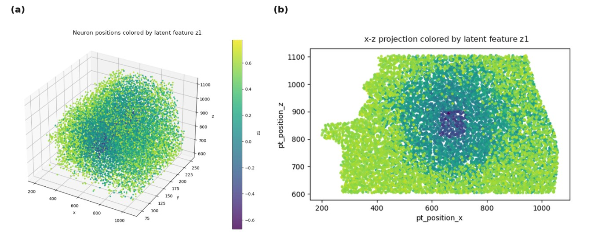
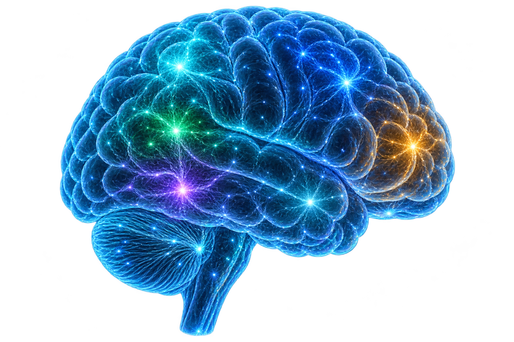
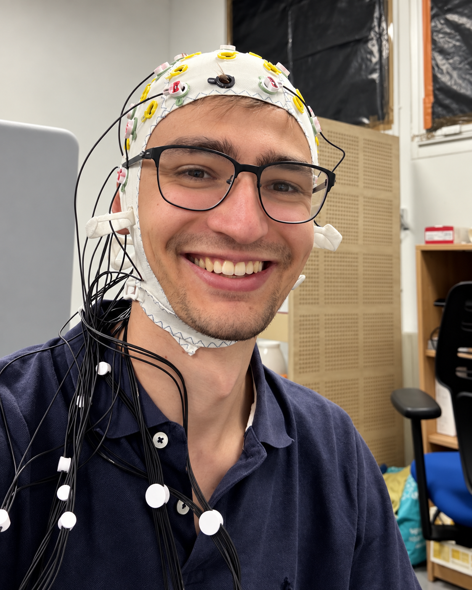
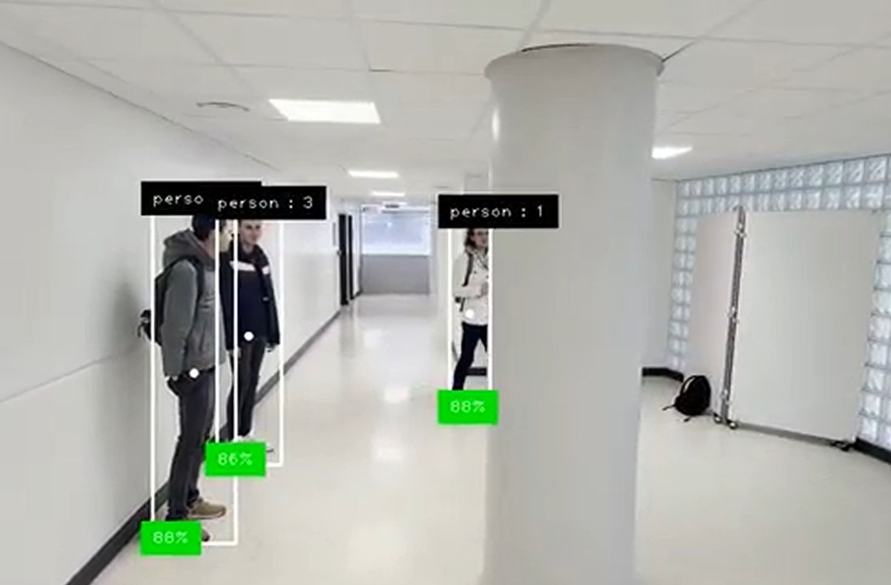
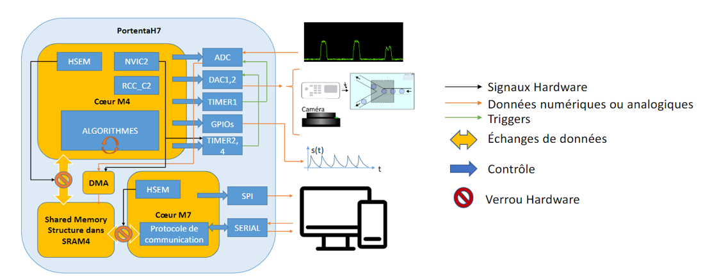
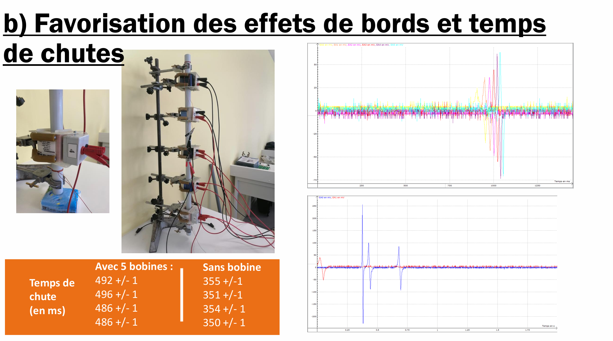

Neuroscience · Machine Learning
MICrONS
Cortical connectivity in the visual cortex
A feature-enhanced statistical model of brain connectivity from more than 11 million neuron pairs.
11.6M pairs0.909 AUC
Bridging brains and technology
I design, analyze and build systems at the intersection of neuroscience, signal processing, embedded electronics and intelligent machines.

Select a neural region to enter a project
“Plutôt la tête
“ Montaigne
bien faite
que bien pleine
Selected work

Neuroscience · Machine Learning
A feature-enhanced statistical model of brain connectivity from more than 11 million neuron pairs.

Signal Processing · Explainable AI
Multimodal stress analysis and PPG modelling through visibility graphs and interpretable machine learning.

Computer Vision · Healthcare
A camera network and re-identification pipeline designed to map patient journeys and improve hospital flow.

Embedded Systems · Biomedical
Low-level acquisition, inter-core communication and a LabVIEW interface for high-throughput cell screening.

Physics · Engineering
Magnetic braking, capacitor recovery and genetic optimisation combined in an experimental elevator model.
My path
Neural connectivity modelling using the MICrONS cortical connectome.
Machine learning for physiological signal analysis and stress detection.
Academic exchange in electrical engineering, electronics and robotics.
Engineering degree focused on information technology for healthcare.
Let’s connect
I’m interested in neuroengineering, brain–computer interfaces and medical R&D opportunities.